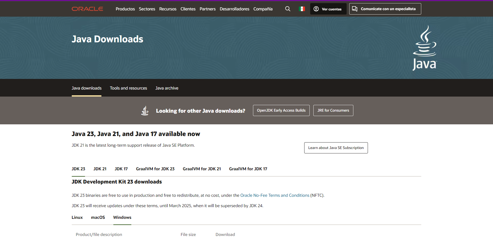
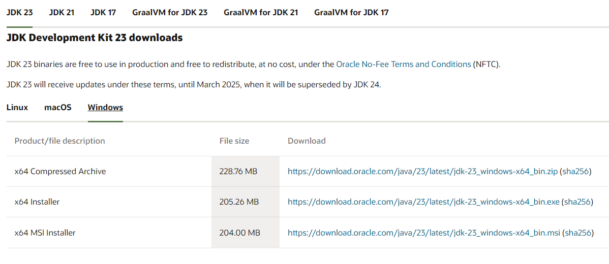
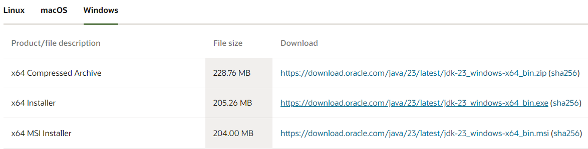
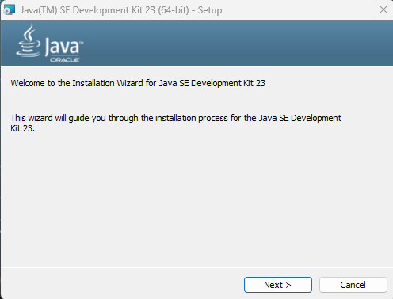
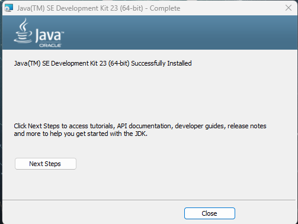
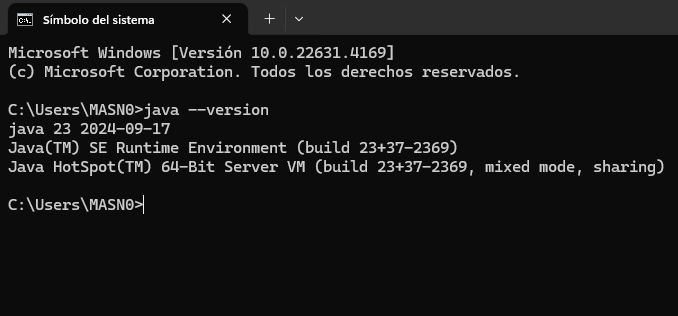

Entramos en JDK Oracle
Seleccionamos el JDK y el sistema que usaremos
Damos click en la descarga que queremos en este caso usaremos x64 Installer
Una vez descargado lo ejecutamos como administrador
Daremos next en las siguientes ventanas
Se instalara el programa y daremos close
Verificamos que se instalara de manera correcta con el CMD escribiendo java --version
